GIS & Mapping
AGOL Geocoder
Find addresses and coordinates using ArcGIS Online's geocoding services.
Digital geographic techniques like GIS, Remote Sensing, GPS, Geostatistics, and Web Mapping are versatile disciplines with limitless applications. Uncover how our earth and spatial systems work digitally through interactive applications, curriculum, and research.
Collection of 30+ interactive spatial utilities, GIS geocoders, cartographic generators, and data science tools.
Find addresses and coordinates using ArcGIS Online's geocoding services.
Search for places worldwide with OpenStreetMap's Nominatim geocoder.
Resize U.S. states based on your data to create thematic cartograms.
A central clearinghouse to explore map projections, retrieve WKT definitions, and download .prj files for GIS software.
Align scanned maps or imagery with geographic coordinates for use in GIS projects.
Measure great-circle distances between two coordinate pairs.
Interactive tool to explore and visualize different world map projections.
Look up time zones and UTC offsets by searching for any city or place.
Get the latest conditions and forecasts with an interactive weather dashboard.
Explore major historical events, births, and deaths on any day of the year. Powered by the Wikimedia API.
Global marine and aviation wind forecast cockpit with vector & satellite charts.
Sounny's version of the classic ColorBrewer palette tool.
Prep headshots for the web with smart cropping, backgrounds, and exports.
Build interactive web maps faster with ready-made Leaflet code snippets.
Write and preview Markdown instantly in a clean online notepad.
Generate custom QR codes from any text or URL.
Upload and compress PDF files to reduce file size.
View, edit, and interact with PDF documents directly in your browser.
Explore voltage, current, and resistance relationships instantly.
Count words, characters, and reading time instantly as you type.
Track the current time with a minimalist, full-screen clock display.
Selected scientific research, environmental justice analysis, planetary remote sensing, and GeoAI initiatives.
Analyzing congressional district shapes to study gerrymandering using geometric compactness measures.
Developing tools in Google Earth Engine for hydrological analysis using the D8 algorithm.
An upcoming interactive audio map for pronunciations of Florida place names.
Mapping environmental hazards and demographic data to study environmental justice in Florida.
A revolutionary AI agent specialized in geospatial analysis and GIS workflows. Experience the future of geographic intelligence.
An interactive poster session exploring how AI shapes policy, engineering, earth observation, life sciences, astrophysics, and mission planning for space.
JavaScript Mission-planning and Analysis for Remote Sensing—a GIS offering mission planning and data-analysis tools.
An archive exploring iconic spaces through geography, architecture, and cultural significance.
Comprehensive open textbooks and hands-on training modules for Google Earth Engine, GIS principles, and spatial field data collection.
Explore a hands-on textbook that guides you through Google Earth Engine for remote sensing analyses.
Study global regions with thematic insights on culture, environment, and spatial patterns.
Learn core GIS concepts, workflows, and spatial analysis techniques.
Review course materials from the early GIS curriculum archives.
Follow step-by-step GPS activities and field data collection exercises.
Build interactive StoryMaps while learning narrative mapping workflows.
Step-by-step video masterclasses and practical guides covering ArcGIS Pro, ArcMap, Landsat data in GEE, and cartographic design.
Subscribe for the latest spatial computing tutorials, lectures, and GeoAI demos.
Subscribe to my YouTube channel for the latest GIS tutorials and lectures.
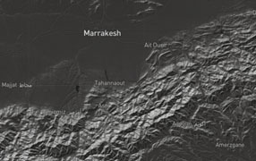
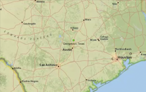
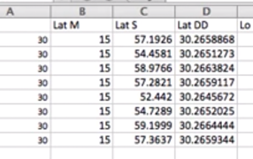
How to convert Lat/Long from Degree, Minutes, Seconds into Decimal Degrees.
How to convert Lat/Long from Decimal Degrees to Degree, Minutes, Seconds.
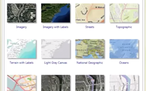
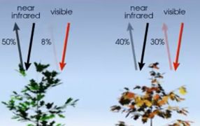
4 band Aerial Photo (RGBiR) is used to calculate the Normalized Difference Vegetation Index (NDVI)
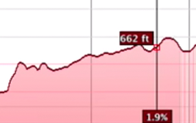
Use Google Earth to explore the elevations of a particular path
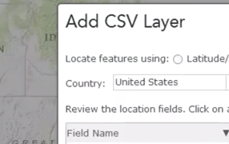
How to geocode addresses from an Excel Spreadsheet (xlsx) to a shapefile (shp).
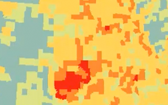
In this video we look at choropleth mapping of FEMA declared disasters.
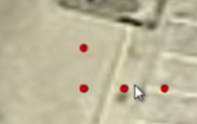
This lab maps and then measures the error associated with GPS signals.
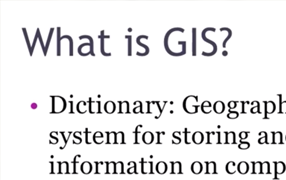
An introductory video about GIS, what it is, and how to apply it. A lecture you would get on the first day of class.
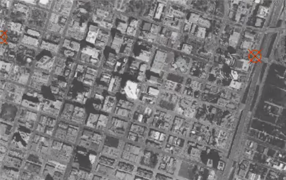
Image to Basemap Georeferencing in ArcGIS Pro of historical aerial photography
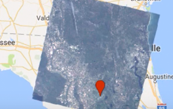
Learn how search and find remotely sensed imagery in Google Earth Engine.
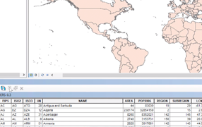
How to open the attribute table of a shapefile or layer in ESRI ArcMap 10 Desktop.
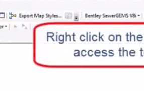
How to find and open a toolbar in ESRI ArcMap 10 Desktop.
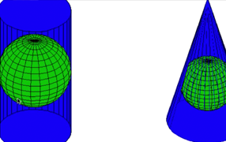
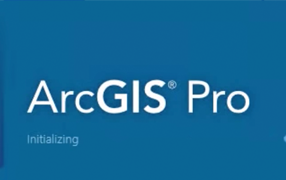
Extracting points from a Graph (X-Y Plot) to use in Excel.
Perform Geographic Weighted Regression on 911 phone calls.
Removing Black Borders (Collars) off of images in ArcMap.
Supervised Image Classification in ArcGIS Desktop - ArcMap.
Interactive learning games, coding showcases, weather education, and community food security locators for K-12 students.
Create new tic-tac-toe versions and contribute via GitHub.
Showcasing projects from Dr. Sounny's enrichment course.
Fun look at extreme weather by Nori Sounny-Slitine.
Find free summer lunches in Alachua County for 2025.
Test your geography knowledge with this interactive map game.
Learn French color names with an interactive matching game.
Essential GIS platforms, code development tools, cloud computing suites, and open data resources.
A suite of GIS software products, which operate on desktop, server, and mobile platforms.
Hosting for software development version control.
Modern, extensible source code editor for web, spatial, and Python development.
An open-source JavaScript library for mobile-friendly interactive maps.
A toolkit for fonts and icons.
A free and open-source CSS framework directed at responsive, mobile-first front-end web development.
Multimedia and creativity software products.
Catalog of free and open source typography.
Online coding sandbox.
Easy to use programming language.
JavaScript run-time environment.
The web's markup language.
Tools for custom online maps and geospatial APIs.
Cloud-based geospatial processing platform.
Open access guide to learning Google Earth Engine.
Open source desktop GIS for geospatial analysis.
Plugin for searching addresses and places in Leaflet maps.
Reach out for academic collaborations, speaking engagements, student advising, or GeoAI consulting.